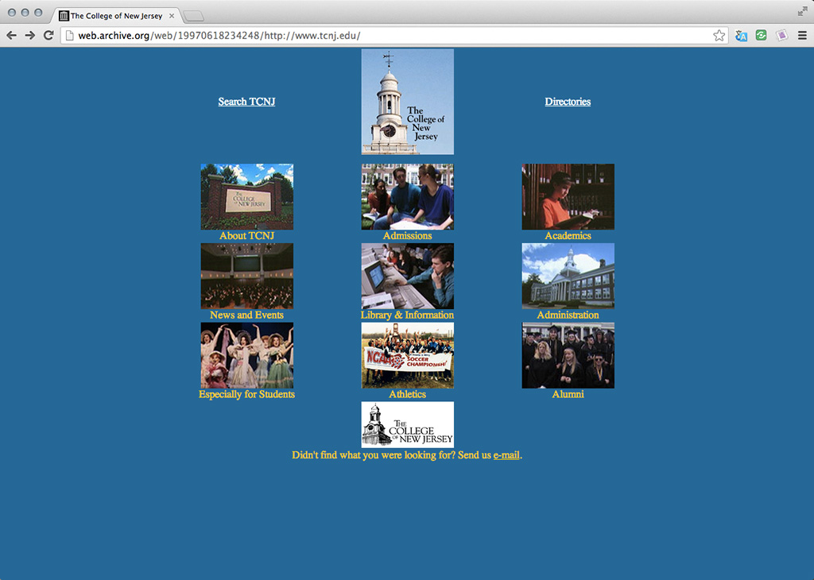

Evolution of web design
First published website, (1991).
1997
Characteristics of Web 1.0
The terms Web 1.0 and Web 2.0 were coined in 1999, when development in dynamic web design and CSS led to a shift in design characterized as Web 2.0. Web 1.0 had been concerned with hyperlinks and text, with some images, and was considered a "top down" approach to design, where content was not editable by users, instead, most web content was posted by "webmasters", developers and web authors. Concerns about privacy and technological limitations were responsible for a mostly one way flow of information, or "read only" material.
Web 1.0 used some design elements that are no longer considered the best practice for building web pages, including frames, tables, spacers, and animated gifs for buttons and other image elements.
There isn't a specific moment that Web 1.0 "ended". In fact, many of the concepts of Web 2.0 existed from the beginning of the World Wide Web in 1991.
Netscape Navigator was the biggest browser at the time, eventually losing the first "browser war" to Internet Explorer. Netscape was developed by Marc Andreessen, another important figure in early web development. What made Netscape so popular was it's user interface. Before Netscape, browsers looked like this.
The popularity of Netscape (multi-billion dollar IPO in 1995) gained the attention of Bill Gates, who immediately expanded his browser development team. Microsoft bought the company that created Mosaic, another browser, and developed Internet Explorer, which was packaged with the Windows operating system, making it immediately the more widely distributed browser. It didn't help that Netscape charged for the browser. The company was eventually bought by AOL in 1999.
In 1996, Macromedia released Flash, a platform for design, animation and interaction, that had a web embed plugin. This had a big impact on design, because web developers were no longer limited to using simple tables and web colors. Basically anything was possible with a Flash app. The downside of course, was that these applications were no longer open source, and didn't allow for the kind of programming needed for collaborative content. Still Flash websites remained very popular until the mid 2000s, when Macromedia was bought by Adobe. With the rise of mobile web and alternative platforms like HTML5 and JavaScript for video and animation, the development of Flash was discontinued by Adobe in 2011. However, Flash remains the favored platform for web content like video and animation by many companies and people.
Here is a fantastic example of what has become known as the Flash aesthetic: SharperFX.
In the early 2000s the rise of CSS compatibility ushered in what we call Web 2.0 -- sites that used CSS to do layout, instead of tables, and had dynamic styles. CSS, Cascading Style Sheets, became very essential to the kind of websites that were being developed, like social networks and blogs, which required uniform styles across dynamically generated webpages, which required style and content to be separated. This allowed for different kinds of user experience and content, for sites where the content was being created by the users, like MySpace, Facebook and Wikipedia. The limitations of Flash became more apparent in this era, as Flash applications were difficult to search for content, which was very important for search engines. The user base and speed of the Internet was exploding, and the need to search content came out of that. Standards in design went from being about presenting information to making interactions possible.
Mobile devices led the second big changes in web design, as different screens created a need for simpler content, intuitive interactions and dynamic styles. Websites that had very complex designs in the mid 2000s were being recreated with lots of empty space, a minimalist revival. Social networking and startups have led to a design boom and new languages, frameworks and concepts are being introduced all the time, things like jQuery, web applications, HTML5 etc etc.